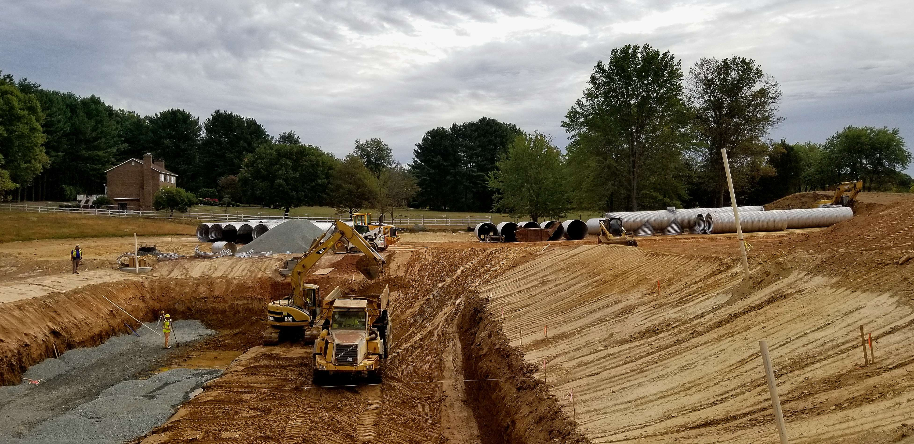
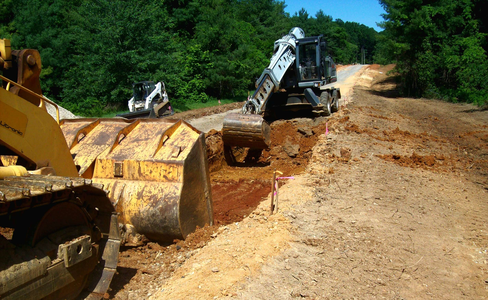
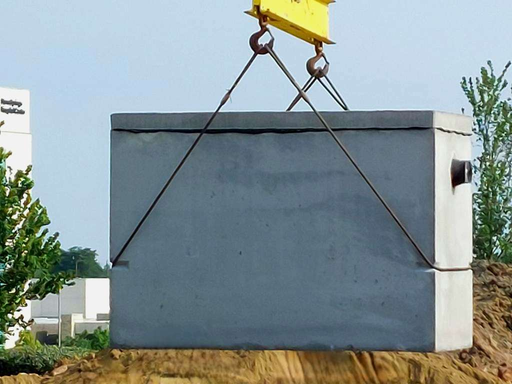
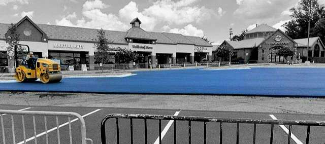
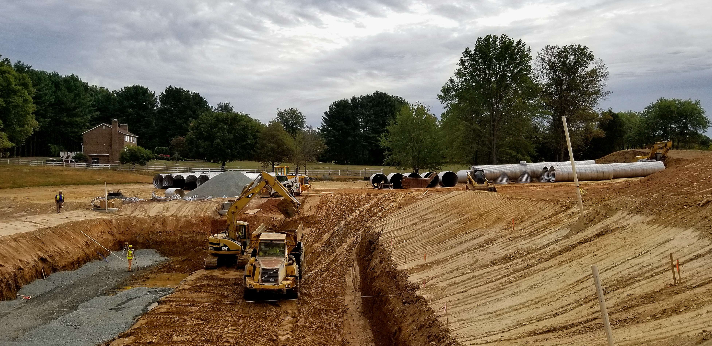
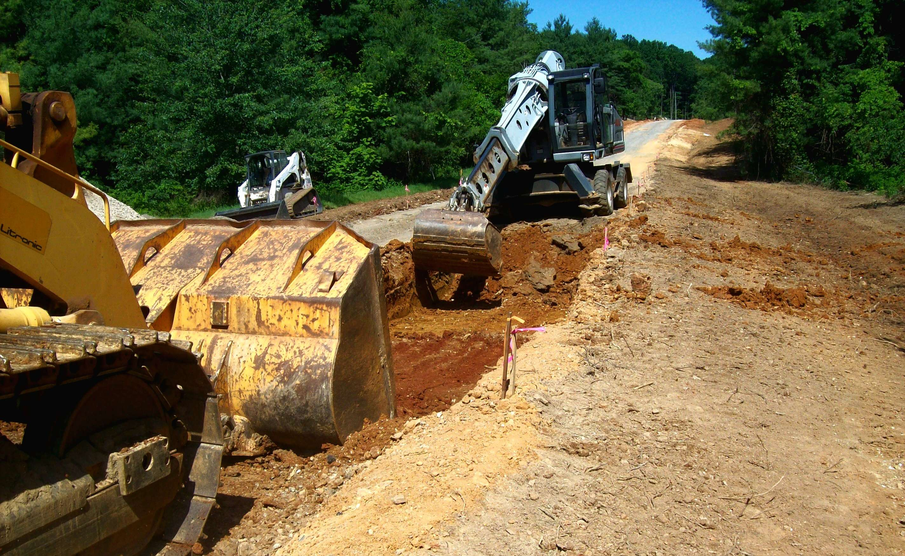
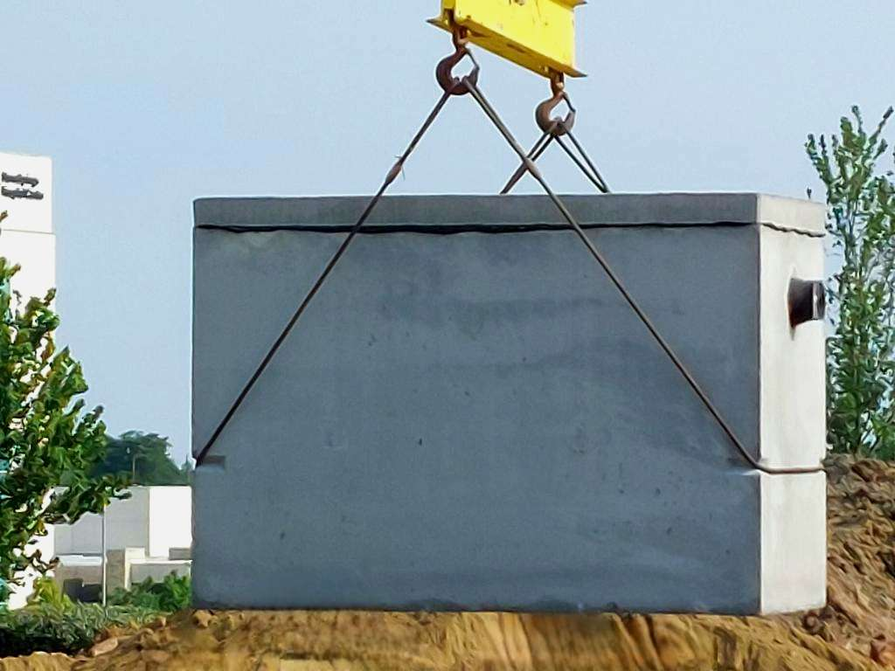
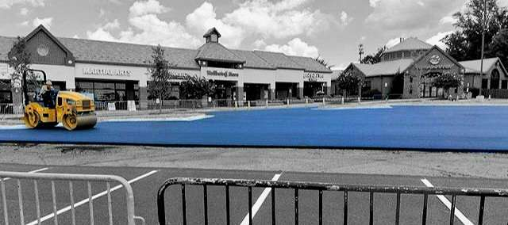

Our Comprehensive Construction Services
At E.E. Lyons Construction Company, we are your trusted partner and provide a wide range of construction services located in Vienna, Virginia. With centuries of accumulated experience from a dedicated team of experts, we offer a one-stop solution for all your construction needs. Our services include:
1. Heavy Hauling Services:
Whether you need to transport heavy materials or machinery, we've got you covered. Our in-house and liaisoned heavy hauling services ensure that your cargo reaches its destination safely and on time.
2. Asphalt Paving:
We take pride in providing top-quality asphalt paving solutions. Our paving professionals deliver smooth, durable, and aesthetically pleasing asphalt surfaces that stand against the test of time.
3. Pipelining:
For all your underground utility needs, our skilled team handles precise and efficient pipelining. We ensure the proper installation of pipelines for water, sewage, and more... We also make sure that our work complies with all regulatory standards.
4. Excavation:
Our excavation services lay the foundation for countless successful projects. From site preparation to grading, we have the expertise and equipment to complete excavation tasks with precision.
5. Project Management:
Let us guide your project from conceptualization to completion. Our project management team ensure that your construction endeavors run smoothly, on time, and within budget.
Summary:
At E.E. Lyons Construction Company, we understand that each project is unique, each with their own set of challenges and requirements. We are committed to delivering tailored solutions that meet your specific needs, whether you're a homeowner, business owner, or a government agency.
We take pride in our commitment to quality, safety, and consistency. With great attention to detail and a dedication to customer satisfaction, we have built a strong reputation for delivering results that will exceed your expectation.
When you choose E.E. Lyons Construction Company, you're choosing a partner who is ready to turn your construction dreams into a reality. Contact us today to discuss your project and let us show you how we can make it happen.
Our team at E.E. Lyons Construction Company is ready to bring our expertise to your construction projects. We bring over 400 years of cumulative experience in Project Management to the table, and we pride ourselves on our efficency, effectiveness, and efficacy
 






